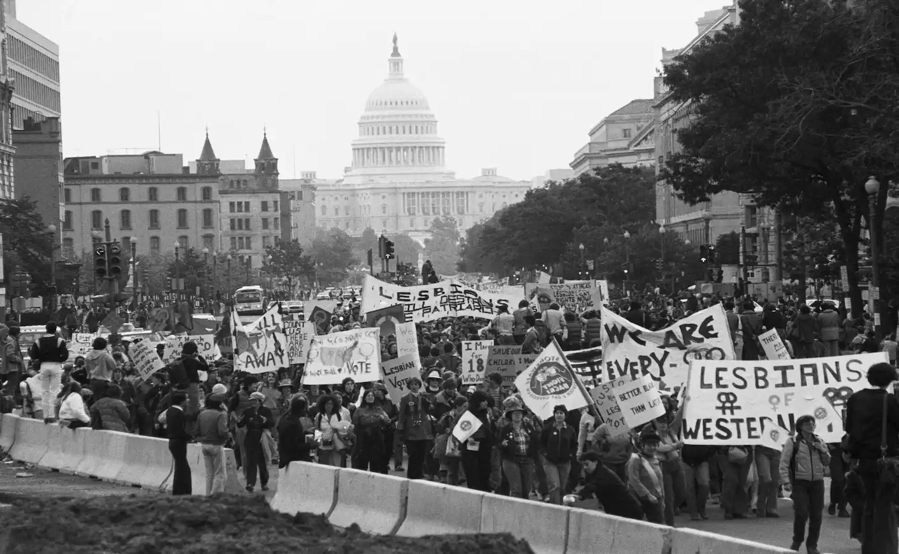
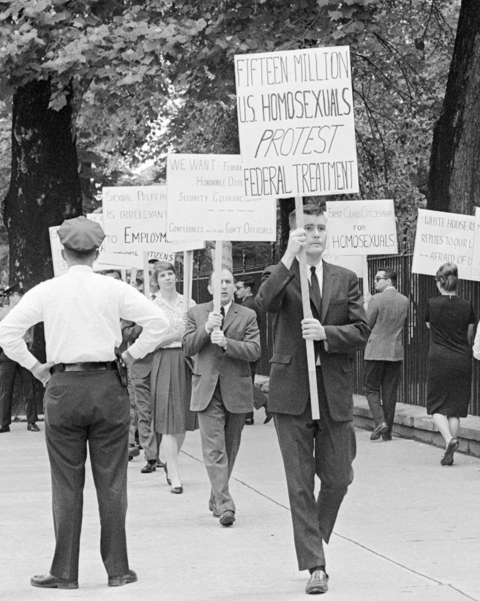
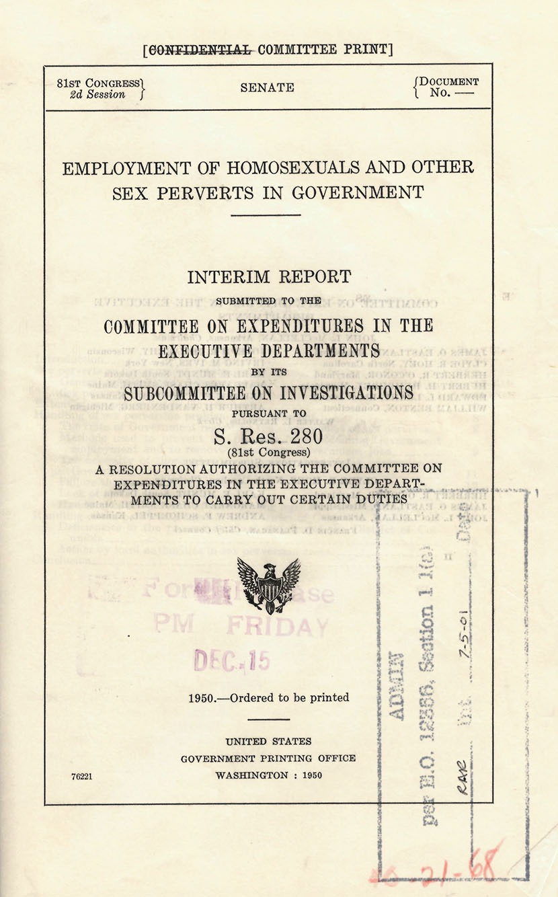
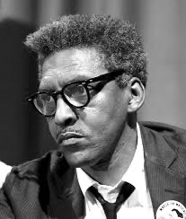
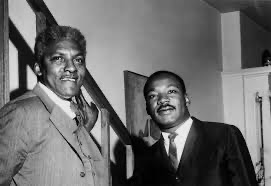
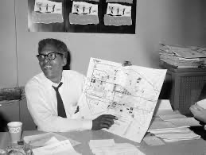
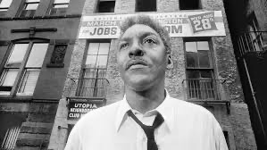
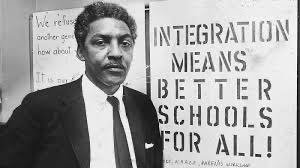

In the 1950s, LGBTQ+ federal workers were targeted and fired in what came to be known as the Lavender Scare.
Labeled as "security risks" and moral threats, thousands of queer individuals lost their jobs under government-sanctioned
discrimination—many forced into silence or exile.
Today, we are witnessing new waves of layoffs in public education, healthcare, and nonprofit sectors—many affecting
LGBTQ+ workers and allies. While not labeled as such, the echoes of systemic exclusion are loud and clear.
This section draws a direct line between then and now—because understanding the past is essential to reshaping
our future.
LGBTQPlusProject.org is committed to preserving these stories—both historical and contemporary.
Explore archival footage, listen to firsthand accounts, and reflect on what it means to be queer in a system
that still fails to protect its own.



Bayard Rustin: The Architect of the Dream
Bayard Rustin was a brilliant strategist, openly gay Black civil rights leader, and a key advisor to Martin Luther King Jr.
He organized the 1963 March on Washington and taught Dr. King the principles of nonviolence. Despite being pushed to the background due to his sexuality, his legacy is monumental.
- Organizer of the 1963 March on Washington
- Advisor to MLK Jr. on nonviolent resistance
- Fighter for LGBTQ+ rights and economic justice
- Co-founder of the Southern Christian Leadership Conference
“We need, in every community, a group of angelic troublemakers.” — Bayard Rustin





×